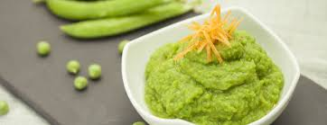

Kasica od graška i piletine
Vreme pripreme:45minuta

Sastojci:
70g graška
1 šargarepa
50g piletine
1 kasičica maslinovog ulja
Postupak spremanja:
Pilece belo meso iseći na kockice prokuvati 20 minuta, a zatim dodati iseckanu šargarepu i grašak. Nakon toga izmikasati i dodati maslinovo ulje.
Vas komentar:
Ovo je mesto za Vas komentar...